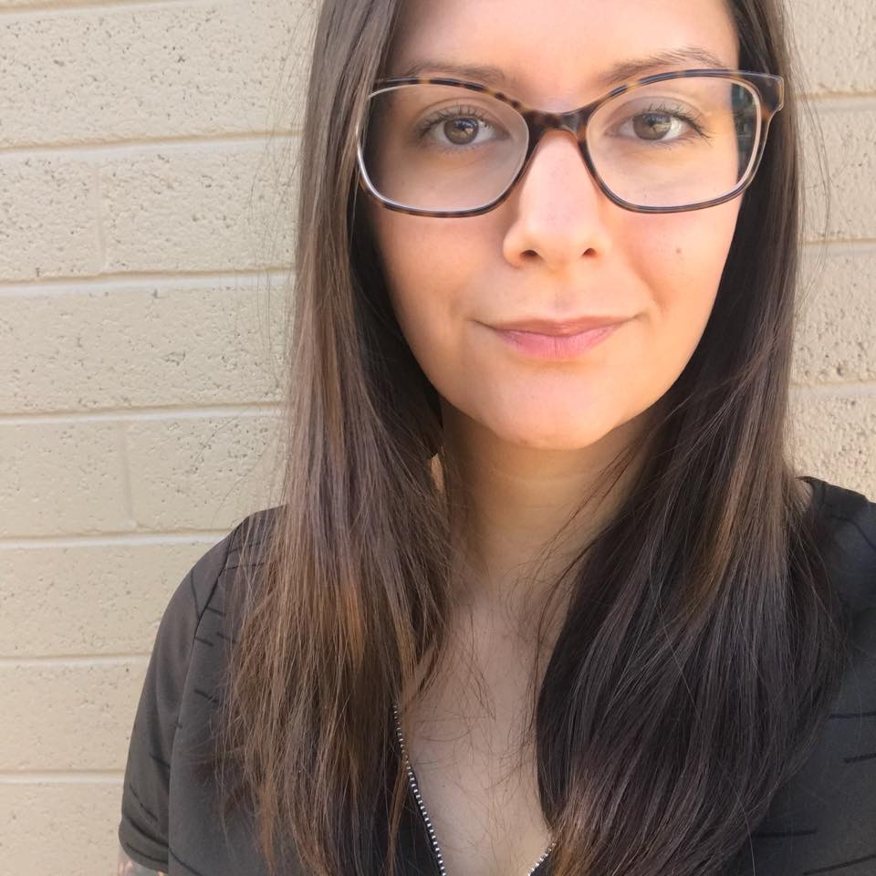

About Me

I am originally from Chicago, IL and I attended university at Northern Illinois
in DeKalb. I have a twin sister, who's name is Amanda and she lives in Northern Phoenix.
I also have an older brother who currently resides in Central Lake, MI. I have lived
in Tempe coming up on a year in May; however, I have been visiting Arizona for the last twenty or so
years. I will be turning 27 at the end of May.
I currently work for an auto warranty company in the accounts payable department, and while
I enjoy the people I work with, I am looking for a career change. I have my BA in English
and a minor in Communications. I have decided to puruse this coding certificate because I believe it will
provide me with enough challenges to keep me interested in the work I am doing. I also believe it will
provide a certain type of gratification because I will be creating things, and working towards something with
a purpose.